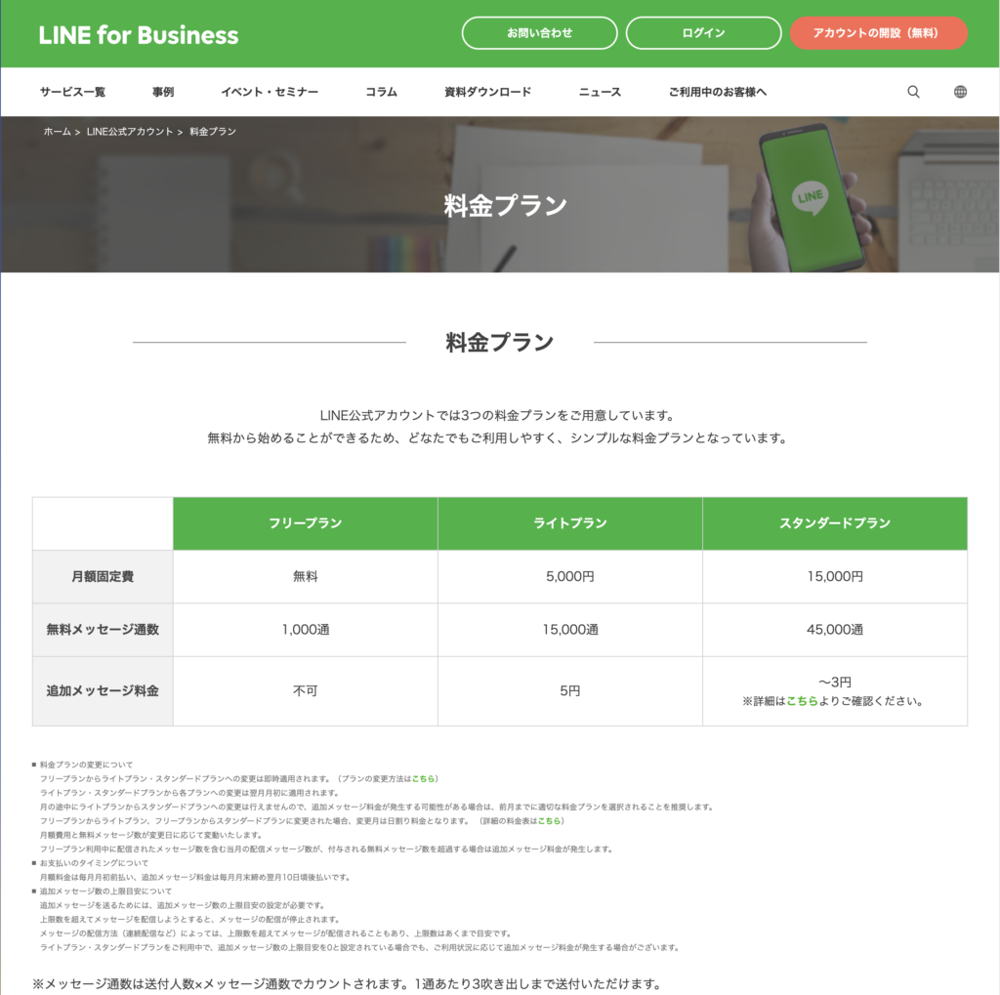

#047_複数店舗のLINE公式アカウント
こんにちは！matsumotoです。
今回は、複数の店舗を抱えるクリーニング店でのLINE公式アカウント活用事例をご紹介します。
（１）店舗ごとにアカウントが必要？
複数のお店を経営している場合、それぞれ店舗ごとにLINE公式アカウントを立ち上げるべきでしょうか。一般的に考えられるLINE公式アカウントの使い方としては、
- お店の営業時間
- セールやキャンペーン情報
- クーポン配布
・・・など、利用者にとって便利なリッチメニューや情報配信を浮かべ、店舗別にアカウントを構築するという発想に陥りがちです。実際にmatsumotoがサポートした案件で、居酒屋のチェーン店が各店舗ごとに公式アカウントを導入していた例もありました。
ただ、この「同じチェーン店なのに別々のアカウントを立ち上げる」ことには、思わぬリスクが潜んでいるのでご注意を！
仮に、店舗数を10店舗とし、それぞれの利用客数を1,000人と仮定します。以下、実際に複数アカウントを立ち上げた場合に起こることをあげていきたいと思います。
（２）店舗別アカウントにかかる初期費用
Lステップを構築する前提でかかる初期費用として、集客とリピート率の改善を目指すと50万円掛かります。計算上は、10店舗なので 50万円×10アカウントで500万円の初期費用が掛かる計算になります。
ただ、Lステップには『データ移行』という機能があるので、アカウントの大部分を丸々コピーできます。同じチェーン店とはいえ、別店舗のアカウントなので表記・画像を変えたりする必要がありますが、労力的には半分～7割ほど削減できます。
そのため、50万円＋25万円×9アカウントで275万円の初期費用となります。
（３）店舗別アカウントのランニングコスト
LINE公式アカウントとLステップを最低プランにした場合、月に1000通（×友だち数）の配信しかできないため、月に１配信しかできません。

これではさすがにもったいないので、Lステップをスタンダードプランとすると、月々27,280円×10アカウント＝270,280円となります。
それでは、これを１アカウントで運用した場合の費用も見てみましょう。
（４）初期費用：１アカウント
１アカウントで運用する場合は、Lステップのアカウントをプロプランで運用します。これは店舗別の流入経路を正確に把握することができるからです！
たとえば「店舗A」で発行したURL（QRコード）から登録されれば「店舗A」のリッチメニューが表示され、配信も「店舗A」でセグメント分けすれば問題無く配信ができるのです。ここを分かっていれば、店舗別にいちいちアカウントを立ち上げなくても良いことが分かりますね。
（５）ランニングコスト：１アカウント
Lステップがプロプランの組み合わせでLINE公式アカウントとLステップ合わせて 月々49,280円となります。
さて、比較してみていかがでしょうか。初期費用もランニングコストも、どちらも圧倒的に1アカウントで運用した方が安くすみます。
それに1アカウントで管理するのであれば、運用にたずさわるスタッフも2人いれば困ることはないでしょう。つまりLINE公式アカウントの運用スタッフの育成の手間も大幅に削減となります。
結論、『１アカウントで運用する』方が圧倒的にコストパフォーマンスが良いです！
（６）まずは公式アカウントを導入しよう！
それ以前にLINE公式アカウントの導入を迷われているようであれば、早急に導入することを強くおすすめします。
こちらも実際にかかる経費で計算してみましょう。顧客すべてにハガキでDMを送る場合です。
各店舗に1,000名の顧客がいて10店舗で10,000人。
印刷代・切手代だけで1回で70万円という経費が掛かっています。
しかし、LINE公式アカウント+Lステップを導入すれば、月々5万円で顧客全員に4回配信できます。ポイントカードもLINE公式アカウント内で運用するとなると更に経費の削減となり その費用対効果は計り知れないです。
このように、LINE公式アカウントの導入の際には経験豊富なコンサルタントにご相談いただければ、具体的な費用など詳細をご説明の上、最適なプランや運営方法についてアドバイスさせていただきます。何か迷っておられたり、分からないことなどあれば、ぜひお気軽にご相談くださいね！